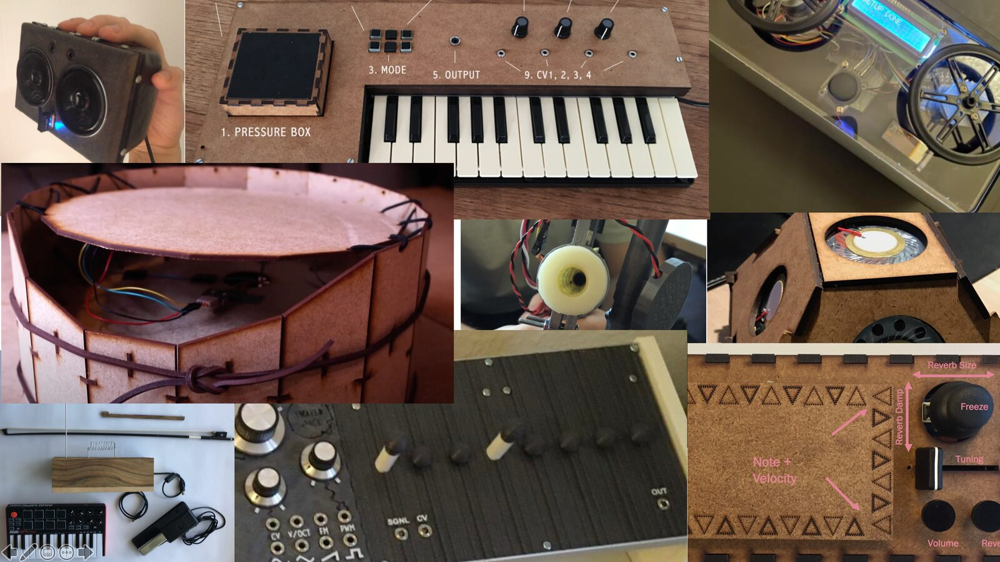

NIME Primer Workshop
Workshop Title:
NIME Primer Workshop
Description
The primary objective for this workshop is to bring new members of the NIME community up to speed with the state-of-the-art research in interaction techniques within the field of music technology and the language surrounding it. While no technical background is required, some familiarity with electronics, computer science, and interactive system design may be helpful. The workshop does not assume or expect participants to have prior knowledge of any specific microcontrollers / microcomputers, sensors, or audio synthesis methods. However, it aims to provide participants with an introduction to these areas, particularly with regards to the most relevant methods and tools common amongst researchers, as well as pointers to re-sources for further study.
The workshop level is aimed towards beginning graduate students or advanced undergraduates who are interested in the area of research, as well as composers and performers who are looking to expand their repertoire of tools and knowledge. Members of the general public curious about recent developments and ongoing research in music technology would also benefit. The workshop will also introduce attendees to newer NIME initiatives such as NIME’s ethical guidelines, the need to incorporate environmental sustainability into our practices, and the importance of inclusivity, diversity, acceptance within the NIME community. In order to further welcome and help newcomers to NIME get the most out of the conference, the workshop will include the opportunity for members to have one-on-one conversations with experienced NIME community members who will continue acting as NIME buddies, or mentors throughout the conference.
The workshop has been presented successfully every year at NIME since 2010, primarily by Michael Lyons and Sidney Fels; since 2019 the workshop continues with Dan Overholt, Laurel Pardue, and Stefania Serafin. In this way, we hope to stimulate the interest of other educators as well as novices, in the area of NIME research. Music technology projects can be a powerful means to motivate students at all levels to learn about a wide range of technical and artistic topics.


Figure 1. NIMEs created at Aalborg University in Copenhagen.
WORKSHOP CONTENT
The following topics will be included in the workshop:
•Interaction design theory
•Evaluation, pedagogy and practice-based research
•Real-time interaction and performance techniques
•Sensors and electronics
•Programming and audio synthesis
•Inclusivity, environmental, and ethical activism within NIME
•New directions for NIME
Background knowledge presented:
As the workshop is aimed at newcomers to the NIME conference, it does not expect all participants to have prior knowledge of the field. Instead, brief presentations will be included on the following:
•History and taxonomical study of musical instruments
•Understanding musical controllers, mapping, and feedback and design principles
•Real-time human-computer interaction in a musical performance perspective
•Protocols for low latency communication in musical contexts
•Evaluations of musical controllers
Workshop Structure
The workshop will be conducted as lectures and discussion, lasting a total of three hours, including one break and two discussion periods. The wide spectrum of topics discussed earlier will be presented alternately by the lecturers, with many audio visual examples drawn from past NIME conferences. A detailed list of topics is beyond the scope of this proposal; participants who wish to dive deeper beyond the workshop, will be encourage to acquire a copy of the textbook: “NIME Reader, Fifteen Years of New Interfaces for Musical Expression” Jensenius, Alexander & Lyons, Michael. (2017).
A brief outline of the workshop is presented below.
Module 1: Introduction, Tools, Design
A Brief History
Introduction to Major Themes
Practical Guide to Building Musical Interfaces
Overview of Sensors and Mapping
Sound Synthesis Techniques
Haptics, Design and Aesthetics
NIME and Music Making
Mapping and the Audience: Transparency
Interaction Metaphors
Design Guidelines
Evaluation techniques
Question and Discussion Period (15 minutes)
Break
Module 2: Case studies, Theory, and Education
Case studies, pure NIMEs
Augmented Instruments
Alternative Instruments and Mobile Instruments
Collaborative Instruments
NIME for extended realities
Designing for expertise
Accessible NIME
Role of Feedback from the Interface
Managing System Complexity
Music Education Related to NIME
Learning Resources
Project-based Curricula
Ethical and environmental considerations in research and design
Conclusion
Question and Discussion
Short Description
This workshop is intended to provide a general introduction to the concepts, theory, language, and practices involved in designing interactive systems for music creation and performance. The target audience for this workshop consists of newcomers to the field who would like to start their own research projects, people coming from other fields, and members of the public with a general interest in the potential of NIME.
Organizers
Dr. Dan Overholt is Associate Professor at Aalborg University Copenhagen, where he directs the Augmented Performance Lab, and teaches in the Sound and Music Computing Masters program. His research has for more than 20 years focused on musical interface technologies. He has co-authored more than 80 inter-national publications, done research within EU-funded projects, and filed as lead inventor on two patents. His research interests include advanced technologies for interactive interfaces and novel audio signal processing algorithms, with a focus on new techniques for creating music and interactive sound. He is involved in the development of tangible interfaces and control strategies for processing human gestural inputs that allow interaction with of a variety of audiovisual systems. He is also a composer, improviser, inventor and instrument builder who performs internationally with his new musical instruments and custom sound synthesis and processing algorithms. Dr. Overholt received a PhD in Media Arts and Technology from the University of California, SantaBarbara, and a M.S. in Media Arts and Sciences from the Massachusetts Institute of Technology.
Dr. Stefania Serafin is Professor in sound in multimodal environments at Aalborg University in Copenhagen. She has been Associate Professor (2006-2012),and Assistant Professor (2003-2006) at Aalborg University Copenhagen. She received a Ph.D. in Computer-Based Music Theory and Acoustics from Stanford University in 2004, and a Master in Acoustics, Computer Science and Signal Processing Applied to Music from IRCAM (Paris) in 1997. She has been a visiting professor at the University of Virginia (2003), and visiting scholar at Stanford University (1999), Cambridge University (2002) and KTH Stockholm (2003). She is principal investigator for the Nordic SMC network and President of the Sound and Music Computing Association. Her main research interests are sound models for interactive systems and multimodal interfaces, and sonic interaction design.
Dr. Laurel S. Pardue is a software engineer for Ableton Live and a NIME diversity officer. She has held Postdoctoral Fellowships at Queen’s University Belfast, Aalborg University Copenhagen, and Queen Mary University of London where she also obtained her PhD having previously obtained multiple degrees from the Massachussets Institute of Technology. Dr. Pardue specialises in embedded programming, sensor interactions, and real-time audio programming. With a firm grounding in musical practice, she was the lead engineer on the recently released electronic Tabla Touch with Keda Music and Kuljit Bhamra; Gamelan Elektrika, a gamelan interface that debuted with Kronos Quartet at NY’s Lincoln Center; and a hybrid-electro-accoustic violin that placed 3rd at the 2020 International Guthman Musical Instrument Competition. Dr. Pardue has toured Europe as violinist in multiple projects including appearances on BBC Radios 2-6 as well as serving as a UN Peacekeeper in Liberia.
Preferred Length of Workshop
Half-day
Technical and Space Requirements
Projector and speakers, blended (online / in-person) workshop format.